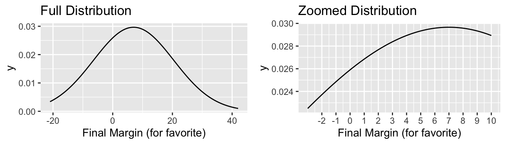
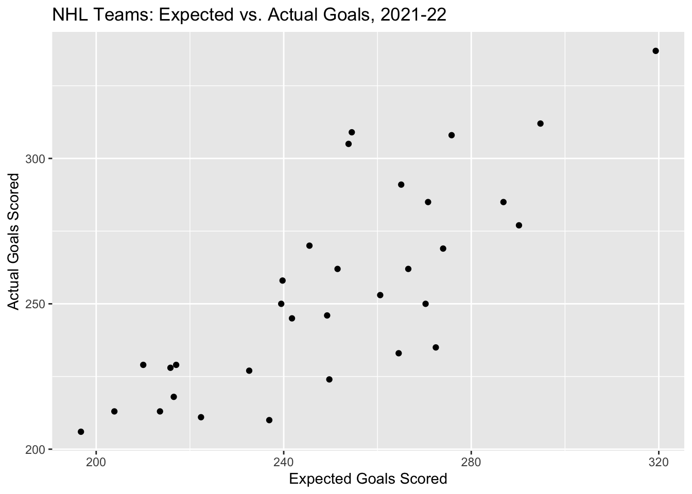

- About
- 1 Exploratory Data Analysis
- 2 Probability
- Chapter Preview
- 2.1 Definitions
- 2.2 Set Theory
- 2.3 Axioms, Properties, and Laws
- 2.4 Combinatorics
- 2.5 Odds and Gambling
- 2.6 Random Variables
- 2.7 Common Random Variables
- 2.8 Extra Stuff
- 2.8.1 Sets and Conditional Probability
- 2.8.2 Binomials and Multinomials
- 2.8.3 Expectation - Baseball
- 2.8.4 Basketball Scenario
- 2.8.5 Multiple Probability Distributions - Basketball
- 2.8.6 Law of Total Probability - Baseball
- 2.8.7 Multinomial Distribution - Baseball
- 2.8.8 Bayes - injured baseball player
- 3 Monte Carlo Simulation
- 4 Statistical Inference
- 5 Correlation
- 6 Linear Regression
- References
1.7 Hockey
Link to YouTube video describing hockey rules
1.7.1 Basic Hockey Statistics
Here are some basic statistics that are used often to describe hockey games.
Goals (G): If a team scores, the skater on the scoring team who last touched the puck is credited with a goal.
Assists (A): The players (up to two) on the scoring team who last touch the puck before the goalscorer are credited with assists, unless the opposing team has possession of the puck in between.
Points (PTS): Goals plus assists. [Not to be confused with team points awarded in the regular season standings by the many hockey leagues, including the NHL (two points for a win, one point for an overtime/shootout loss, zero points for a regulation loss)].
Shots On Goal (SOG): Shot attempts in which the puck has been shot directly on goal. Shot attempts which are blocked or miss the goal are not considered SOGs. A team’s shots on goal should equal the opposing goaltender’s saves plus the team’s goals scored.
Goals Against Average (GAA): Of a goaltender, the number of goals allowed by that goaltender adjusted to a per-60 minute rate.
Penalty Minutes (PIM): The amount of penalty time an individual player is assigned for their infractions. PIM may be different than the amount of time the player actually spends in the penalty box.
Reference:
https://www.milehighhockey.com/pages/stats
1.7.2 Advanced Hockey Statistics
CORSI: CORSI only applies to 5 on 5 (“even-strength”) situations. It is calculated as the difference between shot attempts on offense (shots on goal + blocked shots + missed shots) minus shot attempts allowed on defense. CORSI can also be expressed as a percentage, with percentages over 50% indicating that the player is on ice for more offensive shots than defensive shots.
Expected Goals (xG): Expected Goals statistics give each shot an estimated probability of scoring a goal based on factors such as shot location and game situation. xG cannot be less than 0 or greater than 1 for any particular shot, and different platforms may have different methods of calculating expected goals.
Fenwick/Unblocked Shot Attempts (USAT): Similar to CORSI, but omits blocked shots from the calculation. This statistic is used in many Expected Goals calculations.
Because the flow of a hockey game is usually quite different in situations other than the normal 5 on 5, such as a power play (5 on 4) or concurrent penalties (4 on 4), many hockey databases separate data by the type of game situation. We will see this below with a dataset from MoneyPuck, but it is also present on Natural Stat Trick, QuantHockey, and hockey-reference.
References:
https://www.nhl.com/lightning/news/hockey-analytics-101-understanding-advanced-stats-and-how-theyre-measured/c-735819
https://theathletic.com/121980/2017/10/09/an-advanced-stat-primer-understanding-basic-hockey-metrics/
1.7.3 Actual vs. Expected Goals
Example 1.13 For this example, we’ll use a set of NHL data from moneypuck.com. First, let’s load the data into R and open the data frame.
nhl_2022_data <- read_csv("https://moneypuck.com/moneypuck/playerData/seasonSummary/2021/regular/teams.csv")
nhl_2022_data %>% slice_head(n=10) %>% select(3,6,8,9,10) %>% kt()| name | situation | xGoalsPercentage | corsiPercentage | fenwickPercentage |
|---|---|---|---|---|
| WPG | other | 0.49 | 0.50 | 0.47 |
| WPG | all | 0.49 | 0.50 | 0.50 |
| WPG | 5on5 | 0.49 | 0.49 | 0.50 |
| WPG | 4on5 | 0.16 | 0.14 | 0.15 |
| WPG | 5on4 | 0.86 | 0.86 | 0.85 |
| CBJ | other | 0.52 | 0.49 | 0.49 |
| CBJ | all | 0.45 | 0.48 | 0.47 |
| CBJ | 5on5 | 0.45 | 0.48 | 0.47 |
| CBJ | 4on5 | 0.14 | 0.18 | 0.21 |
| CBJ | 5on4 | 0.81 | 0.84 | 0.82 |
We can create nice looking tables using the ``kableExtra’’ package. Let’s look at the first eight rows and a small selection of columns of the data frame and format the table output using a kable table.
library("kableExtra")
nhl_2022_data[1:8, c(3,6:9)] %>% kt()| name | situation | games_played | xGoalsPercentage | corsiPercentage |
|---|---|---|---|---|
| WPG | other | 82 | 0.49 | 0.50 |
| WPG | all | 82 | 0.49 | 0.50 |
| WPG | 5on5 | 82 | 0.49 | 0.49 |
| WPG | 4on5 | 82 | 0.16 | 0.14 |
| WPG | 5on4 | 82 | 0.86 | 0.86 |
| CBJ | other | 82 | 0.52 | 0.49 |
| CBJ | all | 82 | 0.45 | 0.48 |
| CBJ | 5on5 | 82 | 0.45 | 0.48 |
This dataset includes a lot of covariates. It also splits these data by different game situations: even-strength (5 on 5), power play (5 on 4), etc. Let’s subset the data to include all game situations.
Use the nrow command to check the number of columns in the new data frame. Check: Is it the same as the number of teams in the league for the 2021-2022 season?
nhl_data_all <- filter(nhl_2022_data, situation == "all")
nrow(nhl_data_all)## [1] 32The dataset includes an Expected Goals statistic for each team in the xGoalsFor column. Let’s plot this quantity against the team’s actual number of goals scored; this is given by the goalsFor column.
(Remember to always have a good title and axis labels!)
ggplot(data=nhl_data_all, aes(x=xGoalsFor, y=goalsFor)) + labs(x="Expected Goals Scored", y="Actual Goals Scored", title="NHL Teams: Expected vs. Actual Goals, 2021-22") + geom_point()
As expected, there is a general positive correlation between expected and actual goals (\(r \approx 0.8\)). However, there is some variability - for example, the Kings only scored 7 more actual goals than the Ducks, despite having 56.6 more expected goals.
Let’s add a line to the graph using the geom_abline function corresponding to the line \(y=x\), the line on which data points would fall if expected goals were equal to actual goals. We can also customize the line’s color and type.
ggplot(data=nhl_data_all, aes(x=xGoalsFor, y=goalsFor)) + labs(x="Expected Goals Scored", y="Actual Goals Scored",title="NHL Teams: Expected vs. Actual Goals, 2021-22") + geom_point() + geom_abline(intercept=0, slope=1, color="red", linetype="dashed")
Note: A slope of 0 and an intercept of 1 are actually the default parameters for the function.
Q: What does it mean for a team’s data point to fall below this line? Above it?
A: If the data point is below the line, it means the expected goals were greater than the actual goals; if the data point is above the line, it means the actual goals were greater than the expected goals.
Q: Do you think that a team’s expected goals would be more likely to be closer to its actual goals for a ten-game stretch, an entire season, or five consecutive seasons? Why?
A: We would expect that as sample size increases, the result would become closer to expectation. So, actual goals would be most likely closer to expected goals over a span of five seasons.
1.7.4 Goalie Statistics
Example 1.14 For this next example, let’s use goalie data from the 2021-2022 season from Natural Stat Trick.
goalie_data <- read.csv("data/GoalieTotals_NaturalStatTrick.csv")
goalie_data %>% select(2,3,4,5,6,7,8,12) %>% arrange(-TOI) %>% slice_head(n=10) %>% kt()| Player | Team | GP | TOI | Shots.Against | Saves | Goals.Against | xG.Against |
|---|---|---|---|---|---|---|---|
| Juuse Saros | NSH | 67 | 3931.383 | 2107 | 1934 | 173 | 180.69 |
| Connor Hellebuyck | WPG | 66 | 3903.500 | 2155 | 1962 | 193 | 199.26 |
| Andrei Vasilevskiy | T.B | 63 | 3760.750 | 1869 | 1713 | 156 | 165.89 |
| Thatcher Demko | VAN | 64 | 3699.550 | 1967 | 1799 | 168 | 173.26 |
| Jacob Markstrom | CGY | 63 | 3695.833 | 1754 | 1617 | 137 | 152.26 |
| Tristan Jarry | PIT | 58 | 3414.717 | 1711 | 1573 | 138 | 143.92 |
| Elvis Merzlikins | CBJ | 59 | 3320.400 | 1922 | 1744 | 178 | 164.94 |
| Marc-Andre Fleury | CHI, MIN | 56 | 3284.867 | 1732 | 1573 | 159 | 148.00 |
| Darcy Kuemper | COL | 57 | 3258.117 | 1755 | 1617 | 138 | 154.23 |
| John Gibson | ANA | 56 | 3235.583 | 1789 | 1617 | 172 | 163.53 |
The dataset includes 119 goalies, but many of them didn’t play very much. We can subset the data to include only goaltenders that faced at least 500 shots.
Which player among qualified goalies had the best goals against average? On which team did he play, and what was his GAA?
Which goalie had the most playing time? What was his team, and how much time did he spend on the ice?
filtered_goalie_data <- filter(goalie_data, Shots.Against >= 500)
filtered_goalie_data %>% filter(GAA == min(GAA)) %>% select(Player, Team, GAA) %>% kt()| Player | Team | GAA |
|---|---|---|
| Igor Shesterkin | NYR | 2.07 |
filtered_goalie_data %>% filter(TOI == max(TOI)) %>% select(Player, Team, TOI) %>% kt()| Player | Team | TOI |
|---|---|---|
| Juuse Saros | NSH | 3931.383 |
The following plot compares save percentage to the number of shots on goal faced for the qualified goalies. The dashed horizontal line is placed at the average shots on goal faced among qualified players, and the dashed vertical line is placed at the average save percentage among qualified players.

Q: Which quadrant of the graph represents goalies that faced a higher than average number of shots, but had a below-average save percentage?
A: The second (upper left) quadrant.
Q: Which quadrant represents goalies that had a high save percentage and faced a high volume of shots?
A: The first (upper right) quadrant.
1.7.5 Correlation Plots
When analyzing sports data, there may be many circumstances where statisticians consider which of several variables are most highly correlated to an outcome variable of interest. In this case, it can be useful to use a correlation plot (also known as a correlation matrix or correlogram). Tidyverse and related packages provide many options for creating correlation plots.
Suppose a statistician has recently learned about some advanced hockey statistics and is interested in researching which stat has the highest correlation with goals scored. The statistician wants to compare team shots on goal, CORSI, and Fenwick to observe the association with goals scored for NHL teams.
Example 1.15 The following plot uses the same 2021-2022 data from Moneypuck.com; it gives the pairwise scatterplots and correlation values for each of the variables, as well as smoothed plots of each individual variable along the diagonals.
goal_stats <- nhl_data_all %>% select(shotsOnGoalFor, corsiPercentage, fenwickPercentage, goalsFor)
ggpairs(goal_stats, title="Correlation plot of goals and relevant predictors, NHL 2021-22")
Q: Which of the variables has the strongest correlation with goals scored?
A: CORSI percentage, r = .702.
In the article “An advanced stat primer: Understanding basic hockey metrics”, Charlie O’Connor states, “Generally speaking, Corsi is more predictive of future goal differential than Fenwick… however, Fenwick forms the basis for the most widely-used Expected Goals models.” Let’s use the same predictors in a correlation plot with Expected Goals percentage. Does Fenwick have the strongest correlation with xGoal percentage?
xGoal_stats <- nhl_data_all %>% select(shotsOnGoalFor, corsiPercentage, fenwickPercentage, xGoalsPercentage)
ggpairs(xGoal_stats, title="Correlation plot of expected goals and relevant predictors, NHL 2021-22")